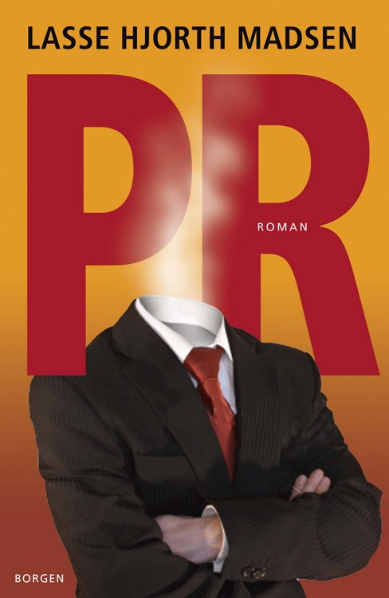

Mine skønlitterære bøger
De Ti Fingre
Den aparte, men begavede Matias Kaa får mere spænding, end han havde håbet på, da han bliver tvunget ind i et job som talknuser for en mystisk kroatisk organisation ved navn De Ti Fingre. Organisationen ledes af den karismatiske Alexander, der får Matias overbevist om sine gode hensigter. Matias suges ind i en vanvittig historie, der udspringer af Balkans traumatiske fortid, fra slaget på Solsortesletten i 1389, til serien af krige i Jugoslavien i 1990’erne. Matias allierer sig med Yayoi, en japansk massør, men for sent opdager de rækkevidden af Alexander og De Ti Fingres magt. De Ti Fingre er en begavet spændingsroman, hvor historiske fakta spiller op mod en nervepirrende, nutidig fortælling. Bogen er en selvstændig fortsættelse af Haikudetektiven, hvor Matias Kaa optrådte for første gang.
Haikudetektiven
37-årige Matias Kaa har nok at gøre med sit sociale handicap og med at læse haikudigte på internettet i arbejdstiden. Hans enspændertilværelse bliver vendt på hovedet, da Matias overordnede, Victor Staun, begår selvmord midt i kontorlandskabet. Matias bliver presset ud i en brutal magtkamp på sin arbejdsplads og beslutter sammen med journalistpraktikanten Josefine, at finde frem til sandheden om Stauns død. Men Matias og Josefine er chanceløse overfor det inferno af katastrofer deres efterforskning udløser. Snart står Matias over for en skrupelløs psykolog, en sexsadist, en hensynsløs forbryderorganisation, sin egen ustabile psyke og sværest af alt: kærligheden. Haikudetektiven er et stakåndet mareridt af en krimi, spækket med knastør humor, i et miljø vi alle kender, men hvor vold, psykopati og magtmisbrug pibler frem, så snart man vender ryggen til.
Udkanten
Marion flytter fra sit kollektiv i København til den lille landsby Nørre Næsby på den jyske vestkyst. Hendes plan er at åbne sin egen butik og sælge økologiske varer. Hun ankommer fuld af selvsikkerhed og føler sig varmt modtaget i det lille samfund. Men tingene er ikke, hvad de giver sig ud for, og langsomt føres Marion ind i en fjendtlig og intrigant verden, hvor alle vogter over en hemmelighed.
Udkanten er et voldsomt og stærkt portræt af, hvad der sker med en kvinde, der ”bryder ind” i Udkantsdanmark
”Lasse Hjorth Madsen har et suverænt overblik og orkestrerer sine virkemidler med sans for timing. Historien om en ukuelig idealist, der alligevel er dømt til at tabe, er forrygende læsning.” – Jyllands-Posten
PR

Christian er en intelligent, charmerende, småkriminel spillefugl. Alligevel havner han en dag ved et tilfælde i et konsulentfirma, iført jakkesæt og i fuld gang med den karriere han altid har forsøgt at undgå. Christian forfølger sin nye løbebane, fast besluttet på at proppe lommerne med penge. Han bliver hjulpet på vej af en lejemorder, en medarbejder i cpr-registeret og en national imagekrise.
PR er et cirkelspark af en hustlerroman om snyd, svindel, bluff, løgn, ærlighed og samvittighed i den del af konsulentverdenen der beskæftiger sig med pr, kommunikation, branding, imagepleje og spin.